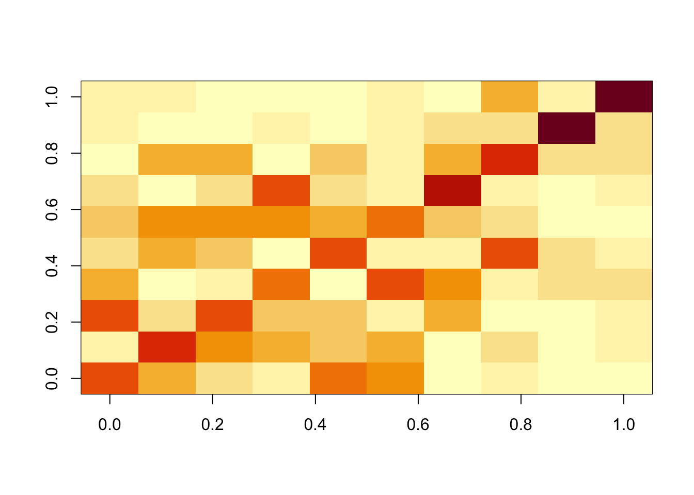
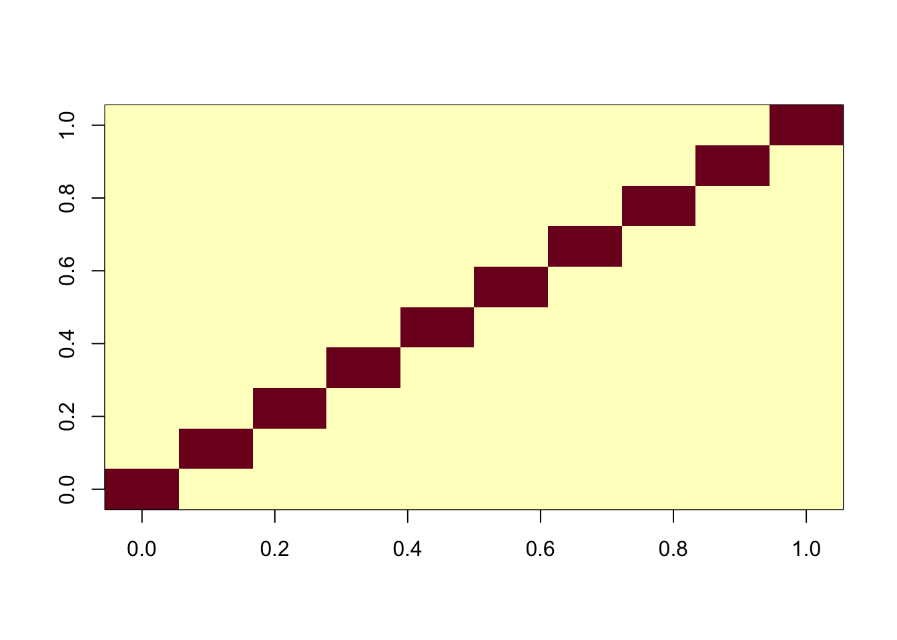
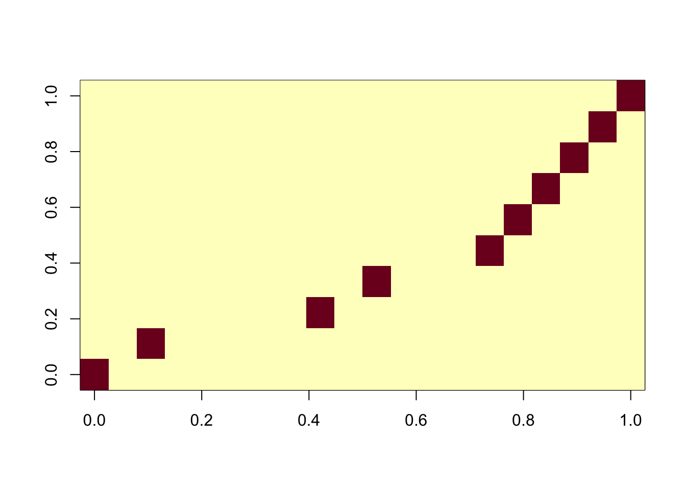
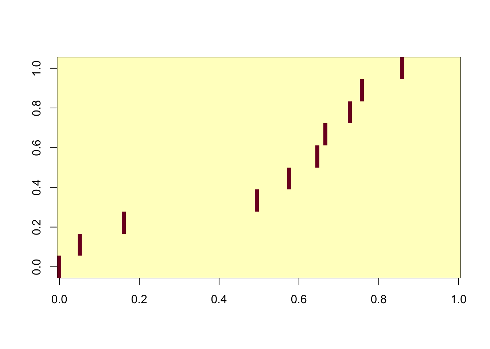
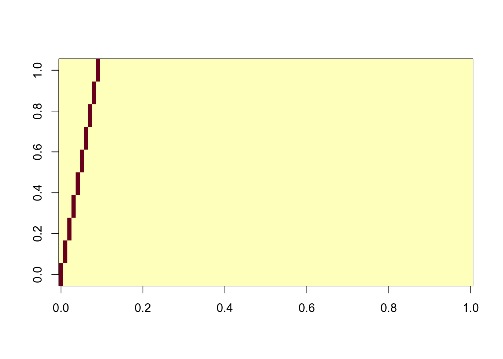

fastica_01
Matthew Stephens
2025-10-22
Last updated: 2025-10-22
Checks: 7 0
Knit directory: misc/analysis/
This reproducible R Markdown analysis was created with workflowr (version 1.7.1). The Checks tab describes the reproducibility checks that were applied when the results were created. The Past versions tab lists the development history.
Great! Since the R Markdown file has been committed to the Git repository, you know the exact version of the code that produced these results.
Great job! The global environment was empty. Objects defined in the global environment can affect the analysis in your R Markdown file in unknown ways. For reproduciblity it’s best to always run the code in an empty environment.
The command set.seed(1) was run prior to running the
code in the R Markdown file. Setting a seed ensures that any results
that rely on randomness, e.g. subsampling or permutations, are
reproducible.
Great job! Recording the operating system, R version, and package versions is critical for reproducibility.
Nice! There were no cached chunks for this analysis, so you can be confident that you successfully produced the results during this run.
Great job! Using relative paths to the files within your workflowr project makes it easier to run your code on other machines.
Great! You are using Git for version control. Tracking code development and connecting the code version to the results is critical for reproducibility.
The results in this page were generated with repository version 26200cc. See the Past versions tab to see a history of the changes made to the R Markdown and HTML files.
Note that you need to be careful to ensure that all relevant files for
the analysis have been committed to Git prior to generating the results
(you can use wflow_publish or
wflow_git_commit). workflowr only checks the R Markdown
file, but you know if there are other scripts or data files that it
depends on. Below is the status of the Git repository when the results
were generated:
Ignored files:
Ignored: .DS_Store
Ignored: .Rhistory
Ignored: .Rproj.user/
Ignored: analysis/.RData
Ignored: analysis/.Rhistory
Ignored: analysis/ALStruct_cache/
Ignored: analysis/figure/
Ignored: data/.Rhistory
Ignored: data/methylation-data-for-matthew.rds
Ignored: data/pbmc/
Ignored: data/pbmc_purified.RData
Untracked files:
Untracked: .dropbox
Untracked: Icon
Untracked: analysis/GHstan.Rmd
Untracked: analysis/GTEX-cogaps.Rmd
Untracked: analysis/PACS.Rmd
Untracked: analysis/Rplot.png
Untracked: analysis/SPCAvRP.rmd
Untracked: analysis/abf_comparisons.Rmd
Untracked: analysis/admm_02.Rmd
Untracked: analysis/admm_03.Rmd
Untracked: analysis/bispca.Rmd
Untracked: analysis/cache/
Untracked: analysis/cholesky.Rmd
Untracked: analysis/compare-transformed-models.Rmd
Untracked: analysis/cormotif.Rmd
Untracked: analysis/cp_ash.Rmd
Untracked: analysis/eQTL.perm.rand.pdf
Untracked: analysis/eb_power2.Rmd
Untracked: analysis/eb_prepilot.Rmd
Untracked: analysis/eb_var.Rmd
Untracked: analysis/ebpmf1.Rmd
Untracked: analysis/ebpmf_sla_text.Rmd
Untracked: analysis/ebspca_sims.Rmd
Untracked: analysis/explore_psvd.Rmd
Untracked: analysis/fa_check_identify.Rmd
Untracked: analysis/fa_iterative.Rmd
Untracked: analysis/flash_cov_overlapping_groups_init.Rmd
Untracked: analysis/flash_test_tree.Rmd
Untracked: analysis/flashier_newgroups.Rmd
Untracked: analysis/flashier_nmf_triples.Rmd
Untracked: analysis/flashier_pbmc.Rmd
Untracked: analysis/flashier_snn_shifted_prior.Rmd
Untracked: analysis/greedy_ebpmf_exploration_00.Rmd
Untracked: analysis/ieQTL.perm.rand.pdf
Untracked: analysis/lasso_em_03.Rmd
Untracked: analysis/m6amash.Rmd
Untracked: analysis/mash_bhat_z.Rmd
Untracked: analysis/mash_ieqtl_permutations.Rmd
Untracked: analysis/methylation_example.Rmd
Untracked: analysis/mixsqp.Rmd
Untracked: analysis/mr.ash_lasso_init.Rmd
Untracked: analysis/mr.mash.test.Rmd
Untracked: analysis/mr_ash_modular.Rmd
Untracked: analysis/mr_ash_parameterization.Rmd
Untracked: analysis/mr_ash_ridge.Rmd
Untracked: analysis/mv_gaussian_message_passing.Rmd
Untracked: analysis/nejm.Rmd
Untracked: analysis/nmf_bg.Rmd
Untracked: analysis/nonneg_underapprox.Rmd
Untracked: analysis/normal_conditional_on_r2.Rmd
Untracked: analysis/normalize.Rmd
Untracked: analysis/pbmc.Rmd
Untracked: analysis/pca_binary_weighted.Rmd
Untracked: analysis/pca_l1.Rmd
Untracked: analysis/poisson_nmf_approx.Rmd
Untracked: analysis/poisson_shrink.Rmd
Untracked: analysis/poisson_transform.Rmd
Untracked: analysis/qrnotes.txt
Untracked: analysis/ridge_iterative_02.Rmd
Untracked: analysis/ridge_iterative_splitting.Rmd
Untracked: analysis/samps/
Untracked: analysis/sc_bimodal.Rmd
Untracked: analysis/shrinkage_comparisons_changepoints.Rmd
Untracked: analysis/susie_cov.Rmd
Untracked: analysis/susie_en.Rmd
Untracked: analysis/susie_z_investigate.Rmd
Untracked: analysis/svd-timing.Rmd
Untracked: analysis/temp.RDS
Untracked: analysis/temp.Rmd
Untracked: analysis/test-figure/
Untracked: analysis/test.Rmd
Untracked: analysis/test.Rpres
Untracked: analysis/test.md
Untracked: analysis/test_qr.R
Untracked: analysis/test_sparse.Rmd
Untracked: analysis/tree_dist_top_eigenvector.Rmd
Untracked: analysis/z.txt
Untracked: code/coordinate_descent_symNMF.R
Untracked: code/multivariate_testfuncs.R
Untracked: code/rqb.hacked.R
Untracked: data/4matthew/
Untracked: data/4matthew2/
Untracked: data/E-MTAB-2805.processed.1/
Untracked: data/ENSG00000156738.Sim_Y2.RDS
Untracked: data/GDS5363_full.soft.gz
Untracked: data/GSE41265_allGenesTPM.txt
Untracked: data/Muscle_Skeletal.ACTN3.pm1Mb.RDS
Untracked: data/P.rds
Untracked: data/Thyroid.FMO2.pm1Mb.RDS
Untracked: data/bmass.HaemgenRBC2016.MAF01.Vs2.MergedDataSources.200kRanSubset.ChrBPMAFMarkerZScores.vs1.txt.gz
Untracked: data/bmass.HaemgenRBC2016.Vs2.NewSNPs.ZScores.hclust.vs1.txt
Untracked: data/bmass.HaemgenRBC2016.Vs2.PreviousSNPs.ZScores.hclust.vs1.txt
Untracked: data/eb_prepilot/
Untracked: data/finemap_data/fmo2.sim/b.txt
Untracked: data/finemap_data/fmo2.sim/dap_out.txt
Untracked: data/finemap_data/fmo2.sim/dap_out2.txt
Untracked: data/finemap_data/fmo2.sim/dap_out2_snp.txt
Untracked: data/finemap_data/fmo2.sim/dap_out_snp.txt
Untracked: data/finemap_data/fmo2.sim/data
Untracked: data/finemap_data/fmo2.sim/fmo2.sim.config
Untracked: data/finemap_data/fmo2.sim/fmo2.sim.k
Untracked: data/finemap_data/fmo2.sim/fmo2.sim.k4.config
Untracked: data/finemap_data/fmo2.sim/fmo2.sim.k4.snp
Untracked: data/finemap_data/fmo2.sim/fmo2.sim.ld
Untracked: data/finemap_data/fmo2.sim/fmo2.sim.snp
Untracked: data/finemap_data/fmo2.sim/fmo2.sim.z
Untracked: data/finemap_data/fmo2.sim/pos.txt
Untracked: data/logm.csv
Untracked: data/m.cd.RDS
Untracked: data/m.cdu.old.RDS
Untracked: data/m.new.cd.RDS
Untracked: data/m.old.cd.RDS
Untracked: data/mainbib.bib.old
Untracked: data/mat.csv
Untracked: data/mat.txt
Untracked: data/mat_new.csv
Untracked: data/matrix_lik.rds
Untracked: data/paintor_data/
Untracked: data/running_data_chris.csv
Untracked: data/running_data_matthew.csv
Untracked: data/temp.txt
Untracked: data/y.txt
Untracked: data/y_f.txt
Untracked: data/zscore_jointLCLs_m6AQTLs_susie_eQTLpruned.rds
Untracked: data/zscore_jointLCLs_random.rds
Untracked: explore_udi.R
Untracked: output/fit.k10.rds
Untracked: output/fit.nn.pbmc.purified.rds
Untracked: output/fit.nn.rds
Untracked: output/fit.nn.s.001.rds
Untracked: output/fit.nn.s.01.rds
Untracked: output/fit.nn.s.1.rds
Untracked: output/fit.nn.s.10.rds
Untracked: output/fit.snn.s.001.rds
Untracked: output/fit.snn.s.01.nninit.rds
Untracked: output/fit.snn.s.01.rds
Untracked: output/fit.varbvs.RDS
Untracked: output/fit2.nn.pbmc.purified.rds
Untracked: output/glmnet.fit.RDS
Untracked: output/snn07.txt
Untracked: output/snn34.txt
Untracked: output/test.bv.txt
Untracked: output/test.gamma.txt
Untracked: output/test.hyp.txt
Untracked: output/test.log.txt
Untracked: output/test.param.txt
Untracked: output/test2.bv.txt
Untracked: output/test2.gamma.txt
Untracked: output/test2.hyp.txt
Untracked: output/test2.log.txt
Untracked: output/test2.param.txt
Untracked: output/test3.bv.txt
Untracked: output/test3.gamma.txt
Untracked: output/test3.hyp.txt
Untracked: output/test3.log.txt
Untracked: output/test3.param.txt
Untracked: output/test4.bv.txt
Untracked: output/test4.gamma.txt
Untracked: output/test4.hyp.txt
Untracked: output/test4.log.txt
Untracked: output/test4.param.txt
Untracked: output/test5.bv.txt
Untracked: output/test5.gamma.txt
Untracked: output/test5.hyp.txt
Untracked: output/test5.log.txt
Untracked: output/test5.param.txt
Unstaged changes:
Modified: .gitignore
Modified: analysis/eb_snmu.Rmd
Modified: analysis/ebnm_binormal.Rmd
Modified: analysis/ebpower.Rmd
Modified: analysis/flashier_log1p.Rmd
Modified: analysis/flashier_sla_text.Rmd
Modified: analysis/logistic_z_scores.Rmd
Modified: analysis/mr_ash_pen.Rmd
Modified: analysis/nmu_em.Rmd
Modified: analysis/susie_flash.Rmd
Modified: analysis/tap_free_energy.Rmd
Modified: misc.Rproj
Note that any generated files, e.g. HTML, png, CSS, etc., are not included in this status report because it is ok for generated content to have uncommitted changes.
These are the previous versions of the repository in which changes were
made to the R Markdown (analysis/fastica_01.Rmd) and HTML
(docs/fastica_01.html) files. If you’ve configured a remote
Git repository (see ?wflow_git_remote), click on the
hyperlinks in the table below to view the files as they were in that
past version.
| File | Version | Author | Date | Message |
|---|---|---|---|---|
| Rmd | 26200cc | Matthew Stephens | 2025-10-22 | workflowr::wflow_publish("fastica_01.Rmd") |
library(fastICA)
library(flashier)Loading required package: ebnmlibrary(RcppHungarian)Introduction
I wanted to take a look at the fastICA package and try it out on a simple simulation. This simulation is based on using a mixture of two Gaussians (a “spike-and-slab” prior) for the latent factors, as in https://github.com/daniel-lazarev/GUIDE/blob/main/GUIDE-simulation.ipynb.
M <- 10000 # Number of variants/samples (rows)
L <- 10 # True number of latent factors
T <- 100 # Number of traits/phenotypes (columns)
s_1 <- 1 # Standard Deviation 1 (Spike component)
s_2 <- 5 # Standard Deviation 2 (Slab component)
eps <- 1e-2 # Standard Deviation for observation noise
# Set seed for reproducibility
set.seed(42)
# Data Simulation (G = X %*% Y + noise)
# 3.1. Generating Standard Deviation Matrices (a and b)
# Elements are sampled from {s_1, s_2} [1, 2].
sd_choices <- c(s_1, s_2)
# Matrix 'a' (M x L): Standard deviations for X (Probabilities p=[0.7, 0.3]) [4]
p_a <- c(0.7, 0.3)
a_vector <- sample(sd_choices, size = M * L, replace = TRUE, prob = p_a)
a <- matrix(a_vector, nrow = M, ncol = L)
# Matrix 'b' (L x T): Standard deviations for Y (Probabilities p=[0.8, 0.2]) [4]
p_b <- c(0.8, 0.2)
b_vector <- sample(sd_choices, size = L * T, replace = TRUE, prob = p_b)
b <- matrix(b_vector, nrow = L, ncol = T)
# Generating Latent Factors (X and Y)
# X is drawn from Normal(0, a)
X <- matrix(rnorm(M * L, mean = 0, sd = a), nrow = M, ncol = L)
# Y is drawn from Normal(0, b)
Y <- matrix(rnorm(L * T, mean = 0, sd = b), nrow = L, ncol = T)
# Generating Noise and Final Data Matrix G
# Noise is generated from Normal(0, eps)
noise <- matrix(rnorm(M * T, mean = 0, sd = eps), nrow = M, ncol = T)
# Calculate the final data matrix G = X @ Y + noise
G <- X %*% Y + noiseNow I’ll apply fastICA to this matrix. It produces a factorization X = SA where S are the sources (independent components) which are designed to be as “non-gaussian” as possible. In this case we see ICA finds all of the components essentially perfectly.
ica_result <- fastICA(G, n.comp = 10)
cormat <- cor(ica_result$S,X)
apply(abs(cormat),1, max) [1] 0.9996204 0.9998202 0.9998590 0.9998774 0.9998719 0.9997143 0.9997914
[8] 0.9997270 0.9997739 0.9998257assignment_problem <- RcppHungarian::HungarianSolver(-1*abs(cormat))
pairings <- assignment_problem$pairs
image(abs(cormat)[pairings[,1], pairings[,2]])
Compare with flashier: we see flashier is much less effective at recovering the components here.
f1 = flash(G, greedy_Kmax = 20, ebnm_fn = ebnm_point_laplace, backfit=TRUE)Adding factor 1 to flash object...
Adding factor 2 to flash object...
Adding factor 3 to flash object...
Adding factor 4 to flash object...
Adding factor 5 to flash object...
Adding factor 6 to flash object...
Adding factor 7 to flash object...
Adding factor 8 to flash object...
Adding factor 9 to flash object...
Adding factor 10 to flash object...
Adding factor 11 to flash object...
Factor doesn't significantly increase objective and won't be added.
Wrapping up...
Done.
Backfitting 10 factors (tolerance: 1.49e-02)...
Difference between iterations is within 1.0e+06...
Difference between iterations is within 1.0e+05...
Difference between iterations is within 1.0e+04...
Difference between iterations is within 1.0e+03...
Difference between iterations is within 1.0e+02...
Wrapping up...
Done.
Nullchecking 10 factors...
Done.cormat <- cor(f1$L_pm,X)
apply(abs(cormat),1, max) [1] 0.6180761 0.6401523 0.5992492 0.5850770 0.5961263 0.5756047 0.7152306
[8] 0.6701436 0.9302887 0.9153016assignment_problem <- RcppHungarian::HungarianSolver(-1*abs(cormat))
pairings <- assignment_problem$pairs
image(abs(cormat)[pairings[,1], pairings[,2]])
One question is whether this is because of flashier converging to a local optimum. To assess this we initialize it to the ica solution. We see that this initialization produces essentially the same results as ICA (ie it does not move away from the correct answer) and produces a better elbo than the greedy fit.
f2 = flash_init(G) |> flash_factors_init(init = list(ica_result$S,t(ica_result$A)), ebnm_fn = ebnm_point_laplace) |> flash_backfit()Backfitting 10 factors (tolerance: 1.49e-02)...
Difference between iterations is within 1.0e+06...
Difference between iterations is within 1.0e+05...
Difference between iterations is within 1.0e+04...
Difference between iterations is within 1.0e+03...
Difference between iterations is within 1.0e+02...
Difference between iterations is within 1.0e+01...
Difference between iterations is within 1.0e+00...
Difference between iterations is within 1.0e-01...
Difference between iterations is within 1.0e-02...
Wrapping up...
Done.cormat <- cor(f2$L_pm,X)
apply(abs(cormat),1, max) [1] 0.9996207 0.9998206 0.9998595 0.9998766 0.9998720 0.9997154 0.9997887
[8] 0.9997271 0.9997747 0.9998256assignment_problem <- RcppHungarian::HungarianSolver(-1*abs(cormat))
pairings <- assignment_problem$pairs
image(abs(cormat)[pairings[,1], pairings[,2]])
f1$elbo[1] 2302730f2$elbo[1] 2317773ICA with sequential fit
One feature of fastICA fit is that by default it fits all components jointly. Here I try the sequential (“deflation”) method. Interestingly it also finds the exact solution.
ica_result2 <- fastICA(G, n.comp = 10, alg.typ="deflation")
cormat <- cor(ica_result2$S,X)
apply(abs(cormat),1, max) [1] 0.9997359 0.9996179 0.9997392 0.9997450 0.9995758 0.9996718 0.9994287
[8] 0.9995173 0.9986505 0.9997183assignment_problem <- RcppHungarian::HungarianSolver(-1*abs(cormat))
pairings <- assignment_problem$pairs
image(abs(cormat)[pairings[,1], pairings[,2]])
ICA with fewer components
Interestingly, if you just extract a few components, ICA does much less well. I think this is because ICA has an inital step that projects onto the first n.comp PCs, so if you use, say, n.comp = 2 it only keeps information in the first 2 PCs, so it can’t find the true directions.
ica_result3 <- fastICA(G, n.comp = 2)
cormat <- cor(ica_result3$S,X)
apply(abs(cormat),1, max)[1] 0.5856762 0.7153216ICA with too many components
On the other hand, using too many components, the algorithm is robust.
ica_result4 <- fastICA(G, n.comp = 20)
cormat <- cor(ica_result4$S,X)
apply(abs(cormat),2, max) [1] 0.9995374 0.9997505 0.9995204 0.9995720 0.9993905 0.9993869 0.9992612
[8] 0.9994589 0.9996332 0.9994735assignment_problem <- RcppHungarian::HungarianSolver(-1*abs(cormat))
pairings <- assignment_problem$pairs
image(abs(cormat)[pairings[,1], pairings[,2]])
ICA with all components
Even using all the components, the algorithm is robust.
ica_result5 <- fastICA(G, n.comp = 100)
cormat <- cor(ica_result5$S,X)
apply(abs(cormat),2, max) [1] 0.9972462 0.9967769 0.9955027 0.9974634 0.9957685 0.9957966 0.9956086
[8] 0.9952900 0.9968206 0.9961997assignment_problem <- RcppHungarian::HungarianSolver(-1*abs(cormat))
pairings <- assignment_problem$pairs
image(abs(cormat)[pairings[,1], pairings[,2]])
ICA with all components and sequential
Here we use all the components, together with the deflation algorithm. This is maybe the most similar algorithm to the greedy approach in flashier. Interestingly this takes by far the longest time of all the ICA runs we made here. However, it does successfully extract all the components.
ica_result6 <- fastICA(G, n.comp = 100, alg.typ="deflation")
cormat <- cor(ica_result6$S,X)
apply(abs(cormat),2, max) [1] 0.9977926 0.9978682 0.9972768 0.9977222 0.9971092 0.9970703 0.9973687
[8] 0.9963451 0.9972798 0.9972659assignment_problem <- RcppHungarian::HungarianSolver(-1*abs(cormat))
pairings <- assignment_problem$pairs
image(abs(cormat)[pairings[,1], pairings[,2]])
sessionInfo()R version 4.4.2 (2024-10-31)
Platform: aarch64-apple-darwin20
Running under: macOS Sequoia 15.6.1
Matrix products: default
BLAS: /Library/Frameworks/R.framework/Versions/4.4-arm64/Resources/lib/libRblas.0.dylib
LAPACK: /Library/Frameworks/R.framework/Versions/4.4-arm64/Resources/lib/libRlapack.dylib; LAPACK version 3.12.0
locale:
[1] en_US.UTF-8/en_US.UTF-8/en_US.UTF-8/C/en_US.UTF-8/en_US.UTF-8
time zone: Europe/London
tzcode source: internal
attached base packages:
[1] stats graphics grDevices utils datasets methods base
other attached packages:
[1] RcppHungarian_0.3 flashier_1.0.56 ebnm_1.1-34 fastICA_1.2-7
loaded via a namespace (and not attached):
[1] softImpute_1.4-3 gtable_0.3.6 xfun_0.52
[4] bslib_0.9.0 ggplot2_3.5.2 htmlwidgets_1.6.4
[7] ggrepel_0.9.6 lattice_0.22-6 quadprog_1.5-8
[10] vctrs_0.6.5 tools_4.4.2 generics_0.1.4
[13] parallel_4.4.2 Polychrome_1.5.4 tibble_3.3.0
[16] pkgconfig_2.0.3 Matrix_1.7-2 data.table_1.17.6
[19] SQUAREM_2021.1 RColorBrewer_1.1-3 RcppParallel_5.1.10
[22] scatterplot3d_0.3-44 lifecycle_1.0.4 truncnorm_1.0-9
[25] compiler_4.4.2 farver_2.1.2 stringr_1.5.1
[28] git2r_0.35.0 progress_1.2.3 RhpcBLASctl_0.23-42
[31] httpuv_1.6.15 htmltools_0.5.8.1 sass_0.4.10
[34] lazyeval_0.2.2 yaml_2.3.10 plotly_4.11.0
[37] crayon_1.5.3 tidyr_1.3.1 later_1.4.2
[40] pillar_1.10.2 jquerylib_0.1.4 whisker_0.4.1
[43] uwot_0.2.3 cachem_1.1.0 trust_0.1-8
[46] gtools_3.9.5 tidyselect_1.2.1 digest_0.6.37
[49] Rtsne_0.17 stringi_1.8.7 purrr_1.0.4
[52] dplyr_1.1.4 ashr_2.2-66 splines_4.4.2
[55] cowplot_1.1.3 rprojroot_2.0.4 fastmap_1.2.0
[58] grid_4.4.2 colorspace_2.1-1 cli_3.6.5
[61] invgamma_1.1 magrittr_2.0.3 prettyunits_1.2.0
[64] scales_1.4.0 promises_1.3.3 horseshoe_0.2.0
[67] httr_1.4.7 rmarkdown_2.29 fastTopics_0.7-07
[70] deconvolveR_1.2-1 workflowr_1.7.1 hms_1.1.3
[73] pbapply_1.7-2 evaluate_1.0.4 knitr_1.50
[76] viridisLite_0.4.2 irlba_2.3.5.1 rlang_1.1.6
[79] Rcpp_1.0.14 mixsqp_0.3-54 glue_1.8.0
[82] rstudioapi_0.17.1 jsonlite_2.0.0 R6_2.6.1
[85] fs_1.6.6